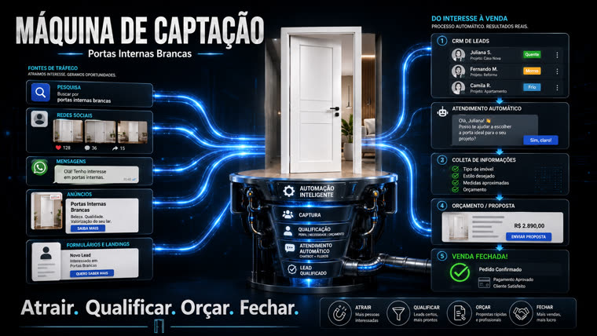
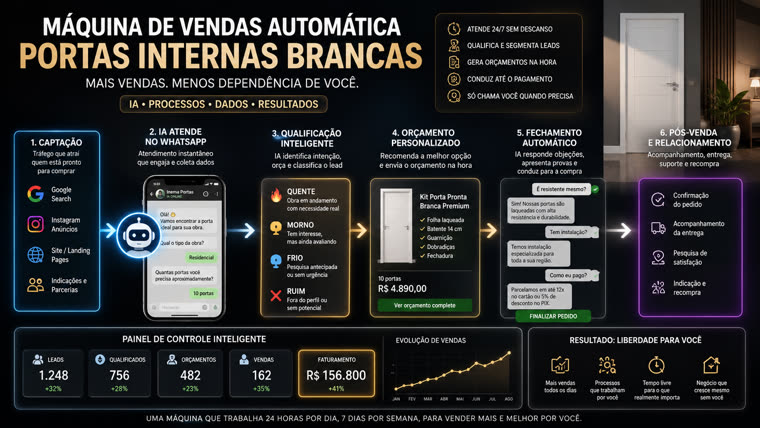

El lead llega por WhatsApp, la IA lo califica, un motor determinístico calcula la cotización con el catálogo real, el Pix cierra el pedido y Telegram solo te avisa cuando se necesita a alguien.
PortaFlow vende puertas interiores blancas para tiendas y revendedores. Hoy este repositorio contiene la fase que decide el éxito del resto: el diagnóstico del negocio, la investigación que valida cada decisión técnica con fuentes primarias y el plan de ejecución en 8 fases, listo para que un agente lo implemente. El código viene después, y con una guía.
El modelo extrae los datos y narra el resultado. Quien calcula es un motor determinístico conectado al catálogo real, con una cotización versionada, ID único y validez, porque según el CDC una oferta precisa obliga a cumplir el acuerdo.
Siete decisiones de arquitectura respaldadas por documentación oficial de Meta, Anthropic, Google y Asaas, además de casos reales de producción, incluidos los incidentes que otros ya pagaron para aprender.
La arquitectura nace con separación por cliente y un adaptador de canal intercambiable. Comienza como un sistema propio de una operación y se convierte en SaaS para varias tiendas sin tener que reescribirlo.
El embudo definido en los documentos, con los puntos en los que el sistema es rígido a propósito: el origen del lead se captura en el primer mensaje (después es irrecuperable) y todo valor en reales pasa por el motor de cotizaciones antes de llegar al cliente.
Google Search y anuncios de clic a WhatsApp. La campaña se optimiza según el evento de lead calificado con valor proxy, no por venta, porque con un ticket alto no hay suficiente volumen para entrenar el algoritmo.
La IA identifica el perfil (tienda, revendedor, constructor), la ciudad, la combinación de puertas, las medidas y el plazo, en pocos intercambios, porque a partir de octubre de 2026 cada mensaje tiene un costo en la API oficial.
Los artículos, el perfil, el volumen y el código postal se introducen en una función pura cubierta por pruebas; el resultado es una cotización con ID, validez y la versión de la tabla de precios utilizada. Los artículos fuera del catálogo no reciben un número, ni siquiera un rango.
Enlace de cobro con Pix para el anticipo y un segundo cobro para el saldo, vinculados a la cotización mediante una referencia externa: así se relaciona el pago confirmado con el anuncio que generó el lead.
Las fases 0 y 1 del plan se ejecutan con lo que ya está aquí. Las demás dependen de datos y cuentas que proporciona el dueño de la operación; el repositorio incluye la lista de verificación completa en doc/lista_dados_necessarios.md.
Exportación del sistema de catálogo con productos, medidas, acabados, composición del kit y tabla de precios por volumen. Esto es lo que habilita el motor de cotizaciones (fase 2).
# cualquier formato sirve doc/catalogo_exemplo.csv
Un chip solo para el bot: nunca el número principal de la empresa. El canal comienza con Evolution API y migra a la API oficial de Meta cuando el volumen lo justifique.
# configura el canal + la base de datos + la cola docker compose up -d
Bot de Telegram para la operación interna, cuenta en una pasarela de pago para generar cobros Pix por API y la clave del modelo de lenguaje.
# los secretos quedan fuera del repo cp .env.example .env
El repositorio está pensado para que un agente de código (Claude Sonnet o Opus) lo ejecute fase por fase, con revisión humana entre ellas. Este es el camino desde cero hasta el MVP.
Todo el material de decisión está versionado: documentos de visión, validación de la investigación y el plan maestro.
git clone git@github.com:inematds/portaflow.git cd portaflow
Empieza por el diagnóstico del negocio, sigue con la validación de la investigación (ahí se justifican las decisiones con fuentes) y termina con el plan de ejecución.
# 1. el negocio y el embudo previsto doc/diagnostico_vendas_portas_internas_brancas.md doc/maquina_captacao_portas_visao_inicial.md doc/visao_geral_maquina_vendas_portas.md # 2. las 7 decisiones con fuentes primarias doc/validacao_pesquisa.md # 3. el plan maestro en 8 fases PLANO.md
El responsable de la operación responde lo que solo él sabe: catálogo, tabla de precios por volumen, límite de descuento de la IA, región atendida y plazos. Sin los elementos A a C, la fase 2 queda bloqueada a propósito.
$EDITOR doc/lista_dados_necessarios.md # marca los elementos a medida que los entregues
O PLANO.md es autosuficiente: incluye arquitectura, modelo de datos, contratos entre módulos, restricciones globales y criterios de aceptación por fase.
claude # en la carpeta del proyecto # entonces pide: "lee PLANO.md y ejecuta la Fase 0"
Cada fase se convierte en un plan detallado en doc/planos/ antes de convertirse en código, se implementa en un ciclo de pruebas primero y solo se considera lista cuando la suite está en verde.
pytest -q # todo en verde antes de decir "listo" git commit -m "feat: ..."
El criterio para dar por listo el MVP al final de la fase 4: un lead real llega por WhatsApp, se califica, recibe una cotización correcta calculada a partir del catálogo y paga el anticipo por Pix; el responsable lo sigue todo por Telegram.
# en el bot de operación /resumo # embudo del día: leads, calificados, cotizaciones, ventas /assumir 42 # una persona toma la conversación; el bot se pausa
Las infografías que representan el embudo previsto —desde la captación de tráfico hasta la confirmación del pedido— y el panel de seguimiento que el sistema debe alimentar.


Orden de ejecución con dependencias explícitas. Las fases 0 y 1 no dependen del catálogo y pueden comenzar de inmediato.